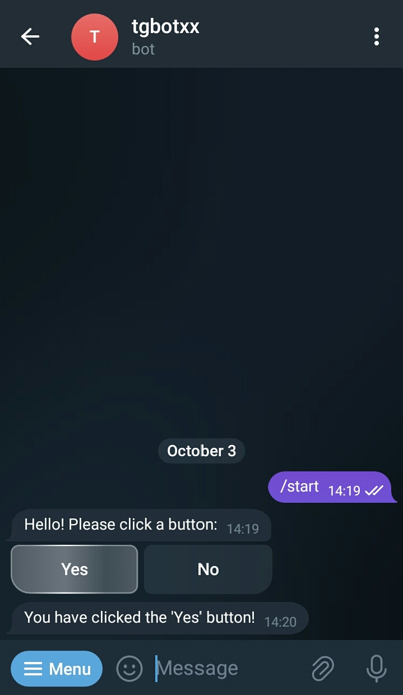

example


tgbotxx
Telegram Bot C++ Library
Compatible with Telegram Bot API 6.9 (September 22, 2023)
CI Status
| Operating system | Build status |
| Ubuntu (x64) |  |
| Windows (x64) |  |
| macOS |  |
Examples
see examples for more:
| Example | Description | Preview |
| WeatherBot | This example shows how to program a Telegram Bot that displays the weather information of a city using the weather api. |  |
| EarthquakeBot | This example shows how to program a Telegram Bot that will alert you if there is a recent earthquake somewhere in the world. |  |
| QrCodeBot | This example shows how to program a Telegram Bot that can generate QrCode images from text and extract text from QrCode Images. |  |
| UrlShortenerBot | This example shows how to program Telegram Bot for shortening URLs. |  |
| Buttons | This example shows how to program a basic Telegram Bot that uses inline keyboard buttons to interact with users. |  |
Usage
This library is using Inheritance-Based Extensibility technique providing a Bot class which you can inherit from and optionally override callback events depending on your Bot needs.
This also allows you to instantiate multiple bots in the same program. Just make sure each Bot is running on a separate thread.
Usage example: Creating a new Bot called MyBot that overrides all callbacks:
#include <iostream>
class MyBot : public Bot {
public:
MyBot() : Bot("BOT_TOKEN_FROM_BOT_FATHER") {}
private:
void onStart() override {
api()->deleteWebhook(true);
Ptr<BotCommand> greet(new BotCommand());
greet->command = "greet";
greet->description = "This command will greet you";
Ptr<BotCommand> stop(new BotCommand());
stop->command = "stop";
stop->description = "Stop the bot";
api()->setMyCommands({greet, stop});
std::cout << "Bot " << api()->getMe()->username << " Started\n";
}
void onStop() override {
std::cout << "Bot " << api()->getMe()->username << " Stopped\n";
}
void onAnyMessage(const Ptr<Message>& message) override {
api()->sendMessage(message->chat->id, "Hi " + message->from->firstName + "!, got your message!");
}
void onCommand(const Ptr<Message>& message) override {
if(message->text == "/stop") {
api()->sendMessage(message->chat->id, "Bot stopping...");
return;
}
}
void onLongPollError(const std::string& reason) override {
std::cerr << "Long polling error: " << reason << std::endl;
}
void onNonCommandMessage(const Ptr<Message> &message) override {}
void onUnknownCommand(const Ptr<Message> &message) override {}
void onEditedMessage(const Ptr<Message>& editedMessage) override {}
void onInlineQuery(const Ptr<InlineQuery>& inlineQuery) override {}
void onChosenInlineResult(const Ptr<ChosenInlineResult>& chosenInlineResult) override {}
void onCallbackQuery(const Ptr<CallbackQuery>& callbackQuery) override {}
void onShippingQuery(const Ptr<ShippingQuery>& shippingQuery) override {}
void onPreCheckoutQuery(const Ptr<PreCheckoutQuery>& preCheckoutQuery) override {}
void onPoll(const Ptr<Poll>& poll) override {}
void onPollAnswer(const Ptr<PollAnswer>& pollAnswer) override {}
void onMyChatMember(const Ptr<ChatMemberUpdated>& myChatMemberUpdated) override {}
void onChatMember(const Ptr<ChatMemberUpdated>& chatMemberUpdated) override {}
void onChatJoinRequest(const Ptr<ChatJoinRequest>& chatJoinRequest) override {}
};
int main() {
MyBot bot;
bot.start();
return 0;
}
void stop()
Stop the long polling.
Usage (4 approaches)
1. FetchContent *(recommended)*
Simply use CMake's FetchContent in your project's CMakeLists.txt as below:
cmake_minimum_required(VERSION 3.10)
project(my_bot)
set(CMAKE_CXX_STANDARD 20)
set(CMAKE_CXX_STANDARD_REQUIRED ON)
include(FetchContent)
FetchContent_Declare(tgbotxx
GIT_REPOSITORY "https://github.com/baderouaich/tgbotxx"
GIT_TAG main
)
FetchContent_MakeAvailable(tgbotxx)
add_executable(${PROJECT_NAME} main.cpp)
target_link_libraries(${PROJECT_NAME} PUBLIC tgbotxx)
2. PkgConfig: clone and install the library locally, then use PkgConfig:
<details>
git clone https://github.com/baderouaich/tgbotxx
cd tgbotxx
cmake .. -DCMAKE_BUILD_TYPE=Release
sudo make install
# On Windows run `make install` as administrator
cmake_minimum_required(VERSION 3.10)
project(my_bot)
set(CMAKE_CXX_STANDARD 20)
set(CMAKE_CXX_STANDARD_REQUIRED ON)
find_package(PkgConfig REQUIRED)
pkg_check_modules(tgbotxx REQUIRED tgbotxx)
if(NOT tgbotxx_FOUND)
message(FATAL_ERROR "Did you install tgbotxx locally?")
endif()
add_executable(${PROJECT_NAME} main.cpp)
target_link_directories(${PROJECT_NAME} PUBLIC ${tgbotxx_LIBRARY_DIRS})
target_include_directories(${PROJECT_NAME} PUBLIC ${tgbotxx_INCLUDE_DIRS})
target_compile_options(${PROJECT_NAME} PUBLIC ${tgbotxx_CFLAGS_OTHER})
target_link_libraries(${PROJECT_NAME} PUBLIC ${tgbotxx_LIBRARIES})
</details>
3. find_package: clone and install the library locally, then use find_package(tgbotxx REQUIRED):
<details>
example
cmake_minimum_required(VERSION 3.10)
project(my_bot)
set(CMAKE_CXX_STANDARD 20)
set(CMAKE_CXX_STANDARD_REQUIRED ON)
find_package(tgbotxx REQUIRED)
if(NOT tgbotxx_FOUND)
message(FATAL_ERROR "Did you install tgbotxx locally?")
endif()
add_executable(${PROJECT_NAME} main.cpp)
target_link_directories(${PROJECT_NAME} PUBLIC ${tgbotxx_LIBRARY_DIRS})
target_include_directories(${PROJECT_NAME} PUBLIC ${tgbotxx_INCLUDE_DIRS})
target_compile_options(${PROJECT_NAME} PUBLIC ${tgbotxx_CFLAGS_OTHER})
target_link_libraries(${PROJECT_NAME} PUBLIC ${tgbotxx_LIBRARIES})
</details>
4. Submodule: Use tgbotxx as a project submodule (without installation)
<details>
example
You can also use this library as a submodule in your bot project without the need of installing it in your system. Use git clone or git submodule add the library:
git submodule add https://github.com/baderouaich/tgbotxx ./lib/tgbotxx
or
git clone https://github.com/baderouaich/tgbotxx ./lib/tgbotxx
Then add add_subdirectory(lib/tgbotxx) in your CMakeLists.txt.
cmake_minimum_required(VERSION 3.10)
project(my_bot)
add_subdirectory(lib/tgbotxx) # <-- clone tgbotxx in your project's lib/ directory
add_executable(${PROJECT_NAME} main.cpp)
target_link_libraries(${PROJECT_NAME} PUBLIC tgbotxx) # <-- link with tgbotxx
</details>
Ref:
Telegram Api Documentation
Telegram Api Schema Json Schema